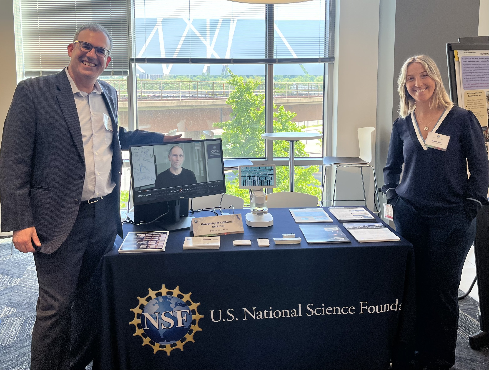

Méabh Allen
Welcome to my personal webpage! Here you can learn more about my research interests.
I'm a condensed matter theory PhD candidate in Joel Moore's group at UC Berkeley. I'm interested in universality in non-equilibrium quantum systems, and have been using field theory and tensor networks in recent works to study novel dynamical behaviour in critical spin systems.
I'm interested in these things for their own sake, and also for applications in quantum computing and metrology. I am the recipient of the NSF Challenge Institute for Quantum Computation (CIQC) Seed Funding, 2024.
Outside of physics, I'm a life-long equestrian, avid gardener, graceless yogi, and book worm.

Selected Publications
J. Wei, MILA, C. Wang, J. Kemp, J. Moore, N. Yao, “Shallow Global Quenches in Critical Spin Chains,” in preparation.
MILA and Oriana Diessel, “Novel Short-Time Universality for Critical Quenches in Non-Equilibrium Phase Transitions,” in preparation.
MILA, G. Woolls, C. Wächtler, J. Moore, “Quantum Fisher Information in a Driven-Dissipative Critical Spin Chain,” in preparation.
Y. Huang et al., “Ultrafast Measurements of Mode-Specific Deformation Potentials of Bi2Te3 and Bi2Se3,” Phys. Rev. X, 13(4), 041050 (Dec 2023).
J. A. Sobota et al., “Influence of Local Symmetry on Lattice Dynamics Coupled to Topological Surface States,” Phys. Rev. B, 107, 014305 (Jan 2023).
Outreach and Teaching
Organizing Committee at the NSF Challenge Institute for Quantum Computation (CIQC), Feb. 2023 - Present.
CIQC Representative at the NSF Quantum Showcase, Apr. 2024.
Graduate Student Instructor, Physics 141B, (special topics course in condensed matter physics), Jan. - May 2024.
Graduate Student Instructor, Physics 7A, (modern physics for beginning engineers), Aug. - Dec. 2023.
